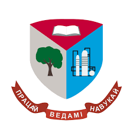

1 июня 1930 года на основе лесного факультета
Белорусской государственной сельскохозяйственной академии был создан Лесной институт, торжественное открытие
которого состоялось 1 октября в Гомеле. Перед новым техническим высшим учреждением образования республики
была
поставлена задача по подготовке инженерных кадров для лесного хозяйства, лесной и деревообрабатывающей
промышленности.
В 1934 году Лесной институт переименован в Белорусский
лесотехнический институт, и в 1935 году ему присвоеноимя С. М. Кирова.
В связи с началом Великой Отечественной войны в 1941 году институт был эвакуирован в Свердловск и включен в
состав Уральского лесотехнического института. После освобождения Гомеля в 1944 году от немецко-фашистских
захватчиков институт вернулся в Беларусь. В августе 1946 года переехал в Минск.
В 1961 году в связи с быстрым развитием химической промышленности институту была поручена подготовка
специалистов с высшим образованием для химического
комплекса, и он был переименован в Белорусский технологический институт имени С. М. Кирова.